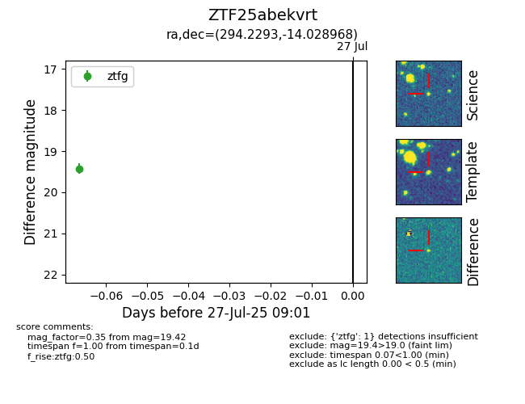

Target ZTF25abekvrt at 2025-07-27 09:01, see:
FINK: fink-portal.org/ZTF25abekvrt
Lasair: lasair-ztf.lsst.ac.uk/objects/ZTF25abekvrt
ALeRCE: alerce.online/object/ZTF25abekvrt
alt names
ZTF25abekvrt (ztf,fink)
coordinates:
equatorial (ra, dec) = (294.2293,-14.02897)
galactic (l, b) = (25.2358,-16.30534)
photometry
last ztfg=19.42
1 ztfg detections
